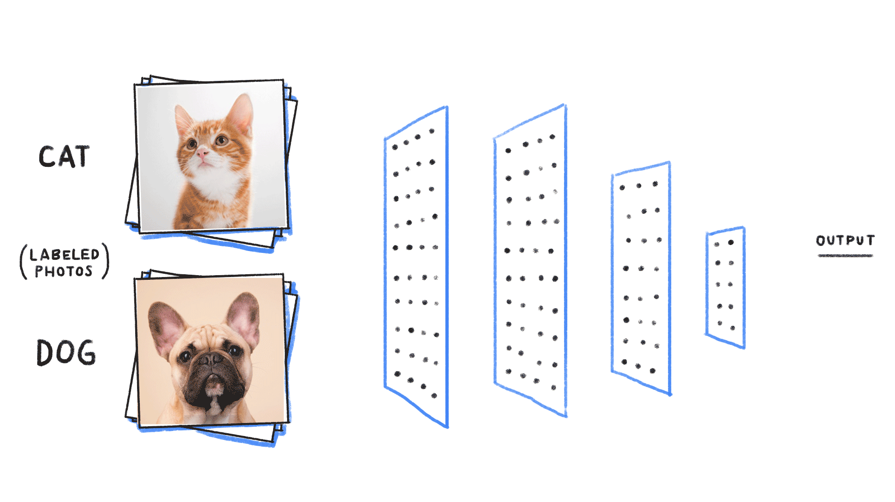
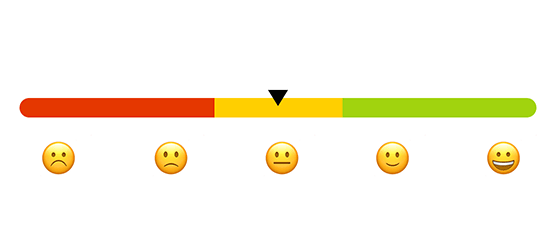

Keywords: Python, Keras, TensorFlow, Dash, Sequential CNN,
VGG16 and Inception V3, Computer Vision, Machine Learning.

Image classification of almost 5000 images into 5 categories using TensorFlow Sequential CNN Model and comparing the accuracy
to the pretrained models which are trained on more than millions of images.
Transfer Learning technique to save the training time and
machine memory for the classification. The Sequential CNN model takes 15 minutes to implement, uses less memory than pre-trained models and
generates an accuracy of 73% which is only 10% less than pre-trained models that take 60 minutes to implement.
Keywords: R Programming, GGplot2, Linear Regression, Memory Management.
Analysis and effect of sources of energy being used by almost 7 million households with 16 different features in the United States based
on the data collected by ACS. The data collected reveals a surprising fact that the US is completely dependent on non-renewable sources of energy except for California.
To understand the reasons for not using renewable sources of energy like cost-effectiveness or lack of awareness, I implemented a linear regression model to predict the cost based on other sources of energy.
Keywords: Python, MongoDB, Spark using Docker, REST API, BLOB, Cassandra and DynamoDB.

Sentiment analysis of YouTube and Twitter data collected by streaming the data and fetching it into MongoDB on AWS, Cassandra and DynamoDB which are commonly used for Big Data.
Various database technologies are used to understand the execution time of for database system so that the response-time can be improved. The data is fetched from each database system and analyzed using Spark on Docker.
Sentiment Analysis on the live videos and events can be performed using the roots of this project to inform the content-creator about the responses of audience and viewers in real-time.
Keywords: Python, Sci-Kit Learn, Clustering (Gaussian Mixture and Mean-Shift), Classification (SVM and Naïve Bayes)

Application of clustering and classification techniques on the Weather of the capital of India (New Delhi) to understand
the approach to Gaussian Mixture, Mean-Shift clustering, SVM and Naïve Bayes Classification on a dataset containing weather of 2000 days with 13 different attributes. The average accuracy of the model is around 80 percent.
Each classification and clustering technique can be applied for a specific type of data.